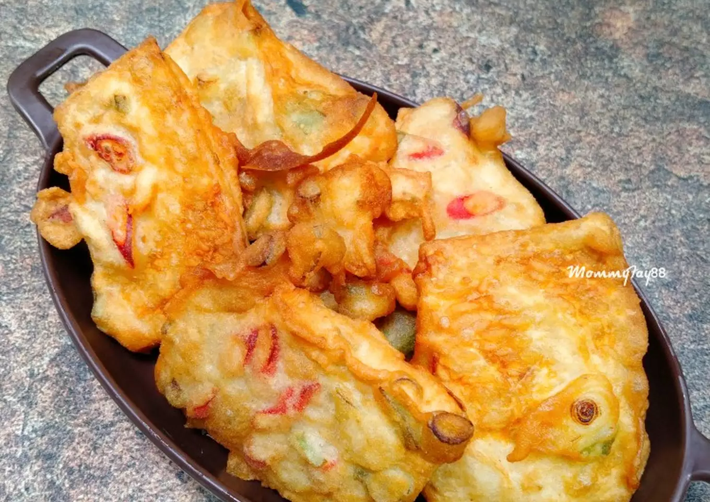

Tempe Mendoan

Deskripsi
Gorengan selalu jadi juara...
Bahan-Bahan
-
1 papan tempe
-
1 batang daun bawang, rajang
-
2 buah cabai merah, iris serong
-
secukupnya minyak goreng
Bahan Adonan Tepung
-
10 sendok makan tepung terigu
-
2 sendok makan tepung beras
-
2 siung bawang putih, haluskan
-
1 siung bawang merah, haluskan
-
1/4 sendok teh kunyit bubuk
-
secukupnya garam dan kaldu bubuk
-
secukupnya air
Cara Membuat
-
Potong² tempe, iris daun bawang dan cabe, campur semua bahan adonan, aduk rata.
-
Masukan daun bawang dan cabe ke dlm bahan adonan, aduk rata. Celupkan 1 per 1 tempe ke dalam bahan adonan.
-
Panaskan minyak, goreng tempe hf kuning kecoklatan. Angkat, sajikan.
Menu Utama